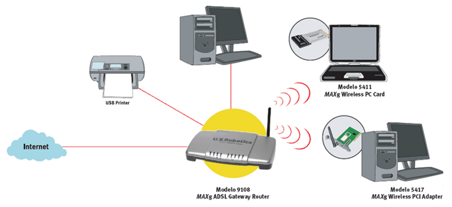

Hoy en día, las redes son parte fundamental de nuestra vida diaria, y existen dos tipos principales de redes: las alámbricas e inalámbricas. Ambas son muy importantes y útiles para conectar dispositivos y compartir información, pero cada una tiene sus ventajas y desventajas.
Las redes alámbricas son aquellas que utilizan cables para conectarse. Es decir, se requiere un cable físico para conectar dispositivos y transmitir datos. Los tipos de cables más comunes utilizados en las redes alámbricas son los cables Ethernet, que pueden ser de diferentes tipos, como Cat5, Cat6, entre otros.
Las redes alámbricas tienen varias ventajas. En primer lugar, pueden ofrecer velocidades de transferencia de datos muy altas, que pueden ser importantes para transmitir grandes cantidades de información. Además, las redes alámbricas son más seguras que las redes inalámbricas, ya que los datos no se transmiten por el aire, lo que evita el riesgo de interferencias o ataques de hackers. Por último, las redes alámbricas son fiables y estables, lo que significa que la conexión no se interrumpirá fácilmente.
Sin embargo, también existen desventajas en las redes alámbricas. En primer lugar, instalar una red alámbrica puede ser costoso, ya que se requiere la instalación de cables y equipos. Además, las redes alámbricas son menos flexibles que las redes inalámbricas, ya que no se pueden mover fácilmente de un lugar a otro. Por último, las redes alámbricas pueden ser complicadas de configurar y mantener, lo que requiere de personal especializado.

Por otro lado, las redes inalámbricas son aquellas que utilizan ondas electromagnéticas para conectarse. En otras palabras, no se requiere un cable físico para conectar dispositivos y transmitir datos. Los tipos más comunes de redes inalámbricas son las WLAN (Wireless Local Area Network), que se utilizan en hogares, pequeñas empresas y oficinas.
Las redes inalámbricas también tienen varias ventajas. En primer lugar, son más flexibles y portátiles que las redes alámbricas, ya que se pueden mover fácilmente de un lugar a otro. Además, las redes inalámbricas son más fáciles de instalar, ya que no se requiere la instalación de cables y equipos. Por último, las redes inalámbricas son más económicas que las redes alámbricas, ya que no se requiere la compra de cables y equipos costosos.
Sin embargo, también existen desventajas en las redes inalámbricas. En primer lugar, la velocidad de transferencia de datos puede ser más lenta que en las redes alámbricas, lo que puede ser un problema si se requiere transferir grandes cantidades de información. Además, las redes inalámbricas son menos seguras que las redes alámbricas, ya que los datos se transmiten a través del aire, lo que las hace más vulnerables a las interferencias y los ataques de hackers. Por último, las redes inalámbricas pueden ser menos estables que las redes alámbricas, lo que significa que la conexión puede interrumpirse más fácilmente.
Ttanto las redes alámbricas como las inalámbricas tienen ventajas y desventajas. La elección de una u otra dependerá de las necesidades específicas de cada usuario. Si se requiere una alta velocidad de transferencia de datos, mayor seguridad y una conexión más estable, una red alámbrica puede ser la mejor opción. Si se busca flexibilidad, portabilidad y facilidad de instalación, una red inalámbrica puede ser la mejor opción. En cualquier caso, es importante asegurarse de que la red elegida sea adecuada para las necesidades del usuario y que se configure y mantenga adecuadamente para garantizar una conexión segura y estable.